sns.catplot(x='age', y='masculinity_important',
data=masculinity_data,
hue='feel_masculine',
kind='point')
plt.show()4 Personalizar los gráficos de Seaborn
En este último capítulo, aprenderás a añadir títulos informativos a los gráficos y etiquetas a los ejes, ¡que son una de las partes más importantes de cualquier visualización de datos! También aprenderás a personalizar el estilo de tus visualizaciones para orientar más rápidamente a tu audiencia hacia los puntos clave. Después, pondrás en común todo lo que has aprendido en los ejercicios finales del curso.
Cambiar el estilo y el color de la trama
- Por qué personalizar?
- Razones para cambiar de estilo:
- Preferencias personales
- Mejorar la legibilidad
- Guiar la interpretación
- Razones para cambiar de estilo:
- Cambiando los estilos de las figuras
- Los estilos de las figuras incluyen el fondo y los ejes
- Opciones: “white”, “dark”, “whitegrid”, “darkgrid”, “ticks”
- Para establecer uno de ellos como estilo global para todos los gráficos se utiliza
sns.set_style()
- Estilo de figura por defecto (“white”)
- Si solo nos interesa la tendencia general:

- Estilo de figura: “whitegrid”
- Para determinar valores específicos:
sns.set_style('whitegrid')
sns.catplot(x='age', y='masculinity_important',
data=masculinity_data,
hue='feel_masculine',
kind='point')
plt.show()
- Cambiando la paleta
- Los cambios en la paleta de la figura, cambia el color de los elementos principales del gráfico
sns.set_palette()- Use las paletas preestablecidas o personalizadas
- Paletas divergentes

- Ejemplo (Paleta divergente)
sns.set_palette('RdBu')
category_order = ["No answer",
"Not al all",
"Not very",
"Somewhat",
"Very"]
sns.catplot(x='how_masculine',
data=masculinity_data,
kind='count',
order=category_order)
plt.show()
- Paletas secuenciales

- Ejemplo de paleta secuencial

- Paletas personalizadas
custom_palette = ["red", "green", "orange", "blue",
"yellow", "purple"]
sns.set_palette(custom_palette)
custom_palette = ["#FBB4AE", "#B3CDE3", "#CCEBC5",
"#DECBE4", "#FED9A6", "#FFFFCC",
"#E5B8BD", "#FDDAEC", "#F2F2F2"]
sns.set_palette(custom_palette)
Cambiar la escala del gráfico
En las figuras “context” cambia la escala de los elementos y etiquetas del gráfico
`sns.set_context()`
Del mas pequeño al más grande: “paper”, “notebook”, “talk”, “poster”.
Contexto por defecto: “paper”
sns.catplot(x='age',
y='masculinity_important',
data=masculinity_data,
hue='feel_masculine',
kind='point')
plt.show()
- Contexto grande: “talk”
- Presentaciones donde el público este mas alejado del gráfico
sns.set_context('talk')
sns.catplot(x='age',
y='masculinity_important',
data=masculinity_data,
hue='feel_masculine',
kind='point')
plt.show()
Cambiar de estilo y de paleta
Vamos a nuestro conjunto de datos que contiene los resultados de una encuestra realizada a jóvenes sobre sus hábitos y preferencias. Hemos proportcionado el código para crear un gráfico de recuento de sus respuestas a la pregunta “¿Con qué frecuencia escuchas los consejos de tus padres?”. Ahora vamos a cambiar el estilo y la paleta para que esta trama sea más fácil de interpretar.
import pandas as pd
import matplotlib.pyplot as plt
import seaborn as sns
ruta = './data/young-people-survey-responses.csv'
survey_data = pd.read_csv(ruta, index_col=0)
survey_data.head()| Music | Techno | Movies | History | Mathematics | Pets | Spiders | Loneliness | Parents' advice | Internet usage | Finances | Age | Siblings | Gender | Village - town | Age Category | Interested in Math | |
|---|---|---|---|---|---|---|---|---|---|---|---|---|---|---|---|---|---|
| 0 | 5.0 | 1.0 | 5.0 | 1.0 | 3.0 | 4.0 | 1.0 | 3.0 | 4.0 | few hours a day | 3.0 | 20.0 | 1.0 | female | village | Less than 21 | False |
| 1 | 4.0 | 1.0 | 5.0 | 1.0 | 5.0 | 5.0 | 1.0 | 2.0 | 2.0 | few hours a day | 3.0 | 19.0 | 2.0 | female | city | Less than 21 | True |
| 2 | 5.0 | 1.0 | 5.0 | 1.0 | 5.0 | 5.0 | 1.0 | 5.0 | 3.0 | few hours a day | 2.0 | 20.0 | 2.0 | female | city | Less than 21 | True |
| 3 | 5.0 | 2.0 | 5.0 | 4.0 | 4.0 | 1.0 | 5.0 | 5.0 | 2.0 | most of the day | 2.0 | 22.0 | 1.0 | female | city | 21+ | True |
| 4 | 5.0 | 2.0 | 5.0 | 3.0 | 2.0 | 1.0 | 1.0 | 3.0 | 3.0 | few hours a day | 4.0 | 20.0 | 1.0 | female | village | Less than 21 | False |
Transformación de los datos de la columna "Parents' advice"
survey_data["Parents' advice"] = survey_data["Parents' advice"].map({1: 'Never',
2: 'Rarely',
3: 'Sometimes',
4: 'Often',
5: 'Always'})Instrucciones
- Configura el estilo en
"whitegrid"para ayudar al público a determinar el número de respuestas de cada categoría.
# Set the style to "whitegrid"
sns.set_style('whitegrid')
# Create a count plot or survey responses
category_order = ['Never', 'Rarely', 'Sometimes',
'Often', 'Always']
sns.catplot(x="Parents' advice",
data=survey_data,
kind='count',
order=category_order)
# Show plot
plt.show()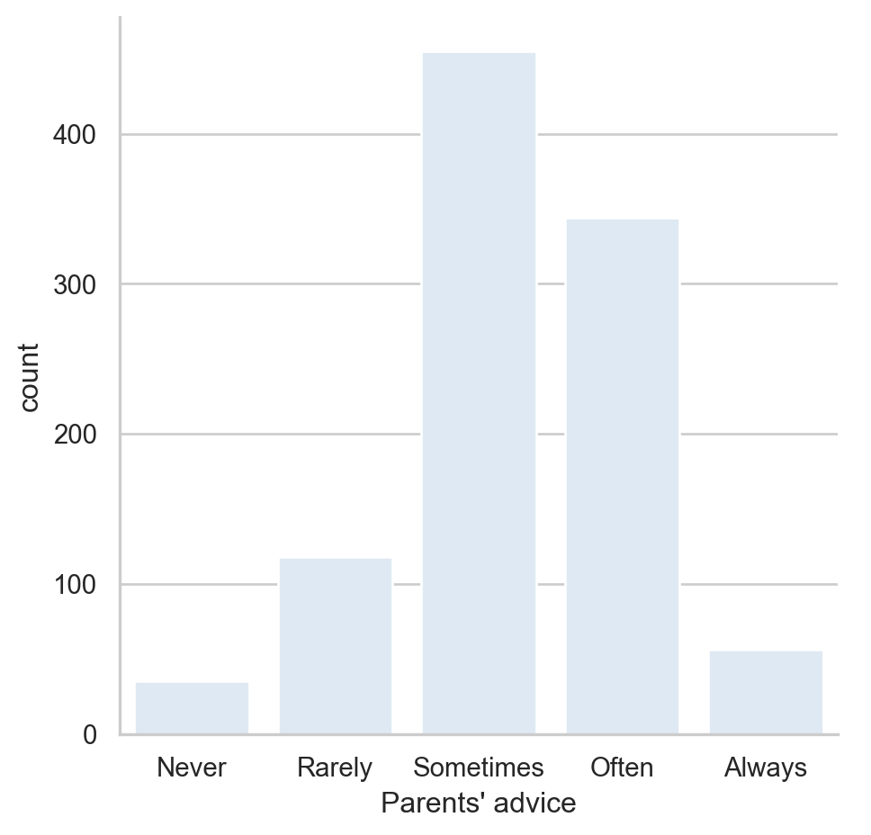
- Establece la paleta de colores en la paleta secuencial denominada
"Purples.
# Set the color palette to "Purples"
sns.set_style('whitegrid')
sns.set_palette('Purples')
# Create a count plot or survey responses
category_order = ['Never', 'Rarely', 'Sometimes',
'Often', 'Always']
sns.catplot(x="Parents' advice",
data=survey_data,
kind='count',
order=category_order,
hue="Parents' advice", legend=False)
# Show plot
plt.show()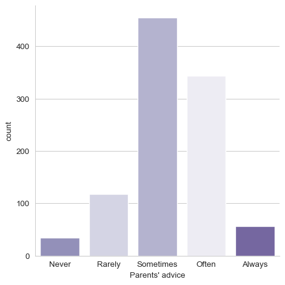
- Cambia la paleta de colores a la paleta divergente
"RdBu"
# Change the color palette to "RdBu"
sns.set_style('whitegrid')
sns.set_palette('RdBu')
# Create a count plot or survey responses
category_order = ['Never', 'Rarely', 'Sometimes',
'Often', 'Always']
sns.catplot(x="Parents' advice",
data=survey_data,
kind='count',
hue="Parents' advice", legend=False,
order=category_order)
# Show plot
plt.show()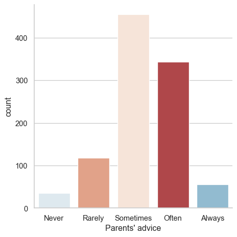
Este estilo y la paleta de colores divergente resaltan mejor la diferencia entre el número de jóvenes que suelen escuchar los consejos de sus padres frente a los que no lo hacen.
Cambiar la escala
En este ejercicio, seguiremos examinando el conjunto de datos que contienen las respuestas de una encuesta a jóvenes. ¿Varía el porcentaje de personas que declaran sentirse solas en función del número de hermanos que tienen? Averigüémoslo utlizando un diagrama de barras, al tiempo que exploramos las cuatro escalas de diagrama diferentes de Seaborn. (“contextos”).
Instrucciones
- Establece la escala (“contexto”) en
"paper", que es la más pequieña de las opciones de escala.
# Set the context to "paper"
sns.set_context('paper')
# Create bar plot
sns.catplot(x='Siblings', y='Loneliness',
data=survey_data,
kind='bar',
hue='Siblings', legend=False)
# Show plot
plt.show()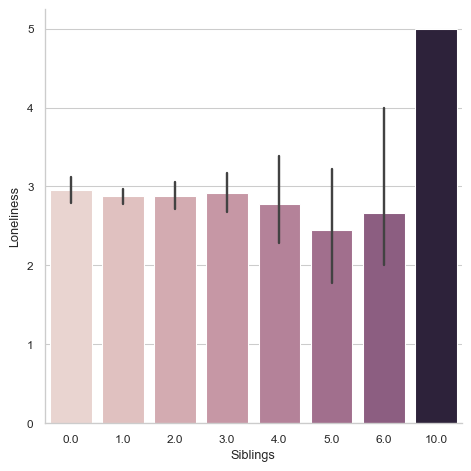
- Cambia el contexto a
"notebook"para aumentar la escala.
# Change the context to "notebook"
sns.set_context("notebook")
# Create a bar plot
sns.catplot(x='Siblings', y='Loneliness',
data=survey_data,
kind='bar',
hue='Siblings', legend=False)
# Show plot
plt.show()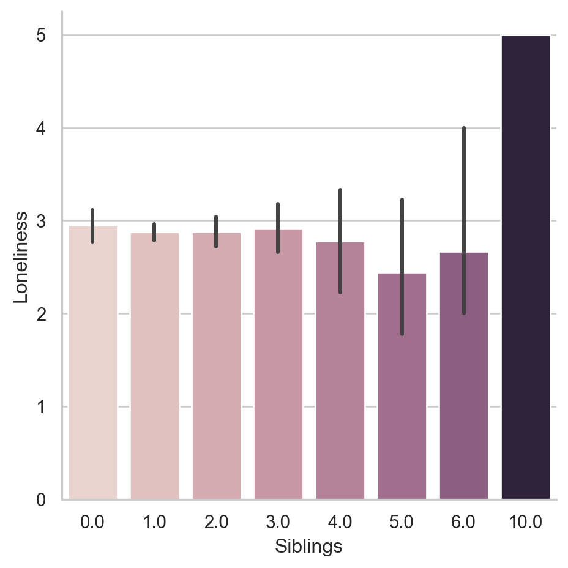
- Cambia el contexto a
"talk"para aumentar la escala.
# Change the context to "notebook"
sns.set_context("talk")
# Create a bar plot
sns.catplot(x='Siblings', y='Loneliness',
data=survey_data,
kind='bar',
hue='Siblings', legend=False)
# Show plot
plt.show()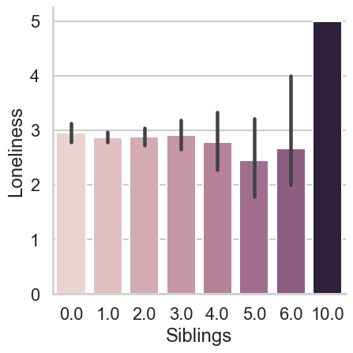
- Cambia el contexto a
"poster", que es la mayor escala disponbible.
# Change the context to "poster"
sns.set_context("poster")
# Create a bar plot
sns.catplot(x='Siblings', y='Loneliness',
data=survey_data,
kind='bar',
hue='Siblings', legend=False)
# Show plot
plt.show()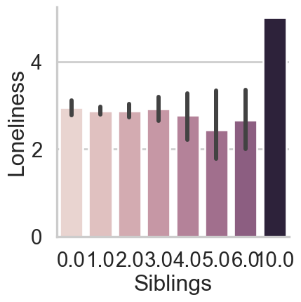
Cada nombre de contexto da la sugerencia de Seaborn sobre cuándo usar una escala de gráfico dada (es un artículo, en un cuadrno de iPythonm en una charla/presentación o en una sesión de póster).
Utilizar una paleta personalizada
Hasta ahora, hemos analizado varias cosas en el conjunto de datos de las respuestas a las encuestas de los jóvenes, como el uso que hacen de internet, la frecuencia con que escuchan a sus padres y cuántos de ellos dicen sentirse solos. Sin embargo, algo que no hemos hecho es un resumen básico del tipo de personas que responden a esta encuesta, incluyendo su edad y género. Proporcionar estos resúmenes básicos es siempre una buena práctica cuando se trata de un conjunto de datos desconocido.
El código proporcionado creará un diagrama de cajas que mostrará la distribución de edades de los encuestados masculinos frente a los femeninos. Vamos a ajustar el código para personalizar la apariencia , esta vez utilizando una paleta de colores personalizada.
Instrucciones
Establece el estilo en
"darkgrid".Establece una paleta de colores personalizada con los códigos hexadecimales de color
"#39A7D0"y"#36ADA4".
sns.set_context('notebook')
# Set the style to "darkgrid"
sns.set_style('darkgrid')
# Set a custom color palette
sns.set_palette(['#39A7D0', '#36ADA4'])
# Create the box plot of age distribution by gender
sns.catplot(x='Gender', y='Age',
data=survey_data, kind='box',
hue='Gender', legend=False) # se agregan pues palette sera deprecated
# Show plot
plt.show()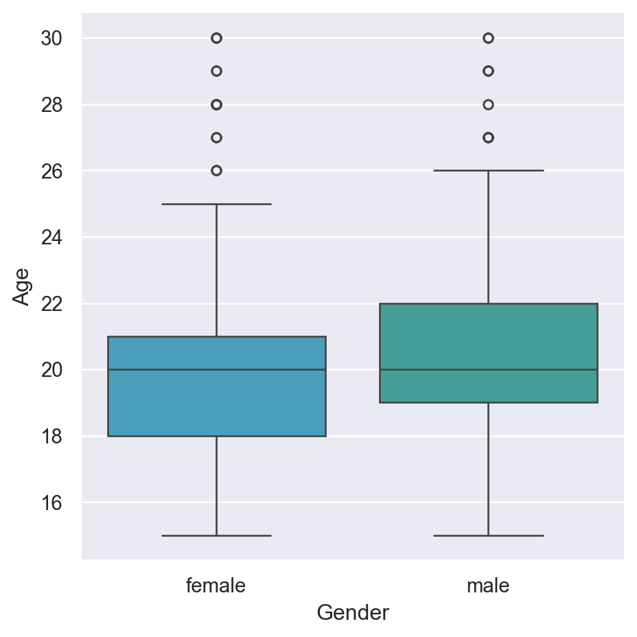
Parece que la edad media es la misma para hombres y mujeres, pero la distribución de las mujeres se inclina hacia edades más jóvenes que la de los hombres.
Añadir títulos y etiquetas: Parte 1
- Creando visualizaciones informativas
- Se añade un título.
- Las etiquetas de los ejes son informativas.
- Las etiquetas del eje x estan giradas para mayor claridad.

Objetos FacetGrid vs. AxesSubplot
- Los gráficos de Seaborn creean dos diferentes tipos de objetos:
FacetGridyAxesSubplot.
- Los gráficos de Seaborn creean dos diferentes tipos de objetos:
g = sns.scatterplot(x='height', y='weight', data=df)
type(g)matplotlib.axes._subplots.AxesSubplot
FacetGrid vacío
Esta formado por uno o varios AxesSuubplots
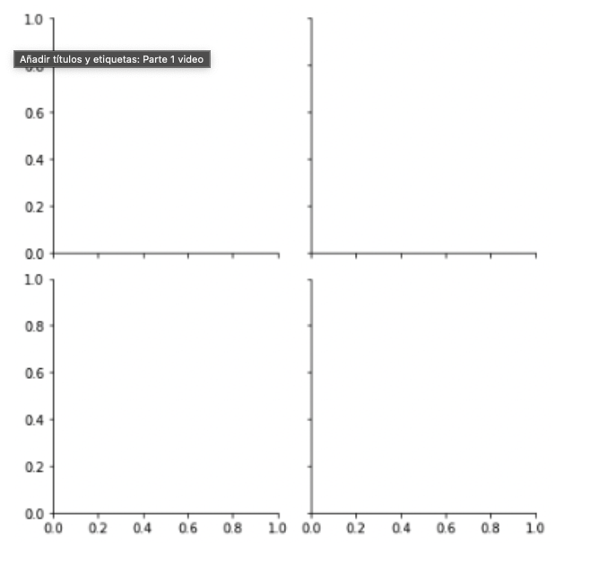
Objetos FacetGrid vs. AxesSubplot
Tipo de Objeto Tipo de gráfico Características FacetGridrelplot(),catplot()Puede crear subplots AxesSubplotscatterplot,countplot, etc.Crea un solo gráfico Añadiendo un título al FacetGrid
g = sns.catplot(x='Region', y='Birthrate',
data=gdp_data, kind='box')
g.fig.suptitle('New Title',
y=1.03)
plt.show()
FacetGrids vs. AxesSubplots
En la lección reciente, aprendimos que las funciones de trazado de Seaborn crean dos tipos diferentes de objetos: objetos FacetGrid y objetos AxesSubplot. El método para añadir un título a tu gráfico variará en función del tipo de objeto que sea.
En el código proporcionadom hemos utilizado relplot() con el conjunto de datos de millas por galón para crear un gráfico de dispersión que muestra la realación entre el peso de un coche y su potencia. Este gráfico de dispersión se asigna a la variable g. Identifiquemos de qué tipo de objeto se trata.
import pandas as pd
import matplotlib.pyplot as plt
import seaborn as sns
ruta = './data/mpg.csv'
mpg = pd.read_csv(ruta)
mpg.head()| mpg | cylinders | displacement | horsepower | weight | acceleration | model_year | origin | name | |
|---|---|---|---|---|---|---|---|---|---|
| 0 | 18.0 | 8 | 307.0 | 130.0 | 3504 | 12.0 | 70 | usa | chevrolet chevelle malibu |
| 1 | 15.0 | 8 | 350.0 | 165.0 | 3693 | 11.5 | 70 | usa | buick skylark 320 |
| 2 | 18.0 | 8 | 318.0 | 150.0 | 3436 | 11.0 | 70 | usa | plymouth satellite |
| 3 | 16.0 | 8 | 304.0 | 150.0 | 3433 | 12.0 | 70 | usa | amc rebel sst |
| 4 | 17.0 | 8 | 302.0 | 140.0 | 3449 | 10.5 | 70 | usa | ford torino |
Instrucciones
- Identifica qué tipo de objeto es el gráfico
gy asígnalo a la variabletype_of_g
sns.set_style('white')
# Create a scatter plot
g = sns.relplot(x='weight', y='horsepower',
data=mpg, kind='scatter')
# Identify plot type
type_of_g = type(g)
# Print type
print(type_of_g)<class 'seaborn.axisgrid.FacetGrid'>
- Pregunta
Acabamos de ver que sns.relplot() crea objetos FacetGrid. ¿Qué otra función Seaborn crea un objeto FacetGrid en lugar de un objeto AxesSubplot?
Respuestas posibles
catplot() admite la creación de subgráficos, por lo que crea un objeto FacetGrid.
Añadir un título a un objeto FacetGrid
En el ejercicio anterior, utilizamos relplot() con el conjunto de datos de millas por galón para crear un gráfico de dispersión que mostrara la relación entre el peso de un coche y su potencia. Esto creó el objeto FacetGrid. Ahora que sabemos qué tipo de objeto es, vamos a añadir un título a esta trama.
Instrucciones
- Añade un título a esta trama:
"Car Wight vs. Horsepower".
# Create a scatter plot
g = sns.relplot(x='weight', y='horsepower',
data=mpg, kind='scatter')
# Add a title "Car Weight vs. Horsepower"
g.fig.suptitle('Car Weight vs. Horsepower')
# Show plot
plt.show()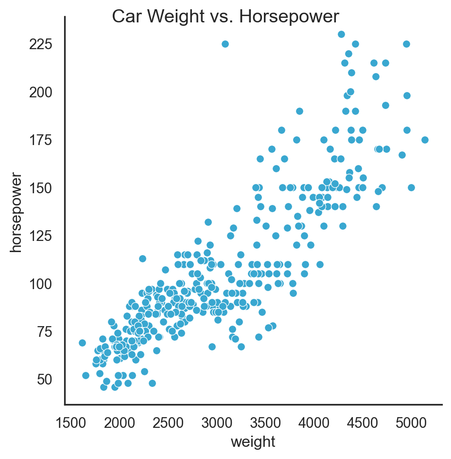
Parece que el peso de un coche está correlacionado positivamente con su potencia.
Añadir títulos y etiquetas: Parte 2
Añadiendo un título a AxesSubplot
- FacetGrid
g = sns.catplot(x='Region', y='Birthrate', data=gdp_data, kind='box') g.fig.suptitle('New Title', y=1.03)
AxesSubplot
g = sns.boxplot(x='Region', y='Birtrate',
data=gdp_data)
g.set_title('New Title',
y=1.03)- Títulos para subgráficos
g = sns.catplot(x='Region', y='Birthrate',
data=gdp_data, kind='box',
col='Group')
# Título general
g.fig.suptitle('New Title',
y=1.03)
# Título de cada gráfico
g.set_title('This is {col_name}')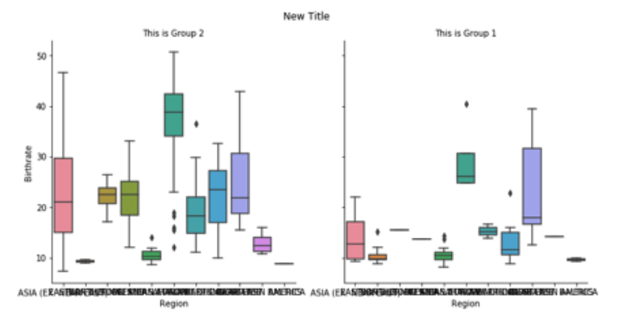
- Añadir etiquetas a los ejes
g = sns.catplot(x='Region', y='Birthrate',
data=gdp_data, kind='box',
col='Group')
g.set(xlabel='New X Label',
ylabel='New Y Label')
plt.show()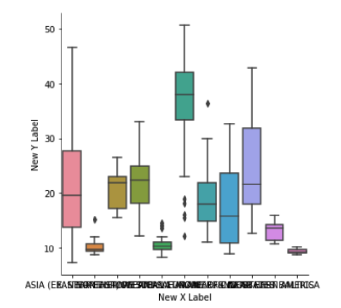
- Rotando las etiquetas del eje x
g = sns.catplot(x='Region', y='Birthrate',
data=gdp_data, kind='box',
col='Group')
plt.xticks(rotation=90)
plt.show()
Añadir un título y etiquetas de eje
Sigamos examinando el conjunto de datos de millas por galón. Esta vez crearemos un gráfico lineal para responder a la pregunta: ¿Cómo cambia a lo largo del tiempo la media de millas por galón que alcanzan los coches en cada uno de los tres lugares de origen? Para mejorar la legibilidad de este gráfico, añadiremos un título y etiquetas de eje más informativas.
En el código proporcionado, creamos el gráfico de líneas utilizando la función lineplot(). Ten encuenta que lineplot() no admite la creación de subtramas, por lo que devuelve un obejeto AxesSubplot en lugar d eun objeto FacetGrid.
import pandas as pd
import matplotlib.pyplot as plt
import seaborn as sns
ruta = './data/mpg_mean.csv'
mpg_mean = pd.read_csv(ruta, index_col=0)
mpg_mean.head()| model_year | origin | mpg_mean | |
|---|---|---|---|
| 0 | 70 | europe | 25.200000 |
| 1 | 70 | japan | 25.500000 |
| 2 | 70 | usa | 15.272727 |
| 3 | 71 | europe | 28.750000 |
| 4 | 71 | japan | 29.500000 |
Instrucciones
- Añade el siguiente título a la trama:
"Average MPG Over Time".
# Create a line plot
g = sns.lineplot(x='model_year', y='mpg_mean',
data=mpg_mean, hue='origin')
# Add title "Average MPG Over Time"
g.set_title('Average MPG Over Time')
# Show plot
plt.show()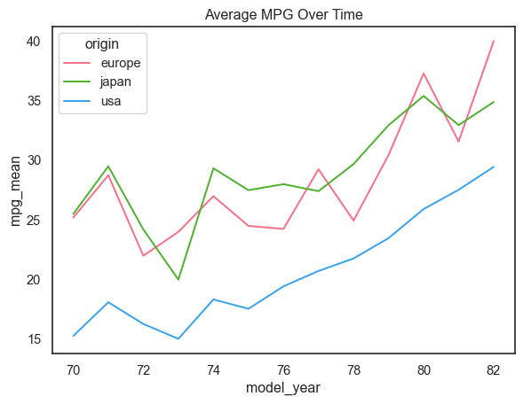
- Etiqueta el eje x como
"Car Model Year"y el eje y como"Average MPG".
# Create a line plot
g = sns.lineplot(x='model_year', y='mpg_mean',
data=mpg_mean, hue='origin')
# Add title "Average MPG Over Time"
g.set_title('Average MPG Over Time')
# Add x-axis and y-axis labels
g.set(xlabel='Car Model Year',
ylabel='Average MPG')
# Show plot
plt.show()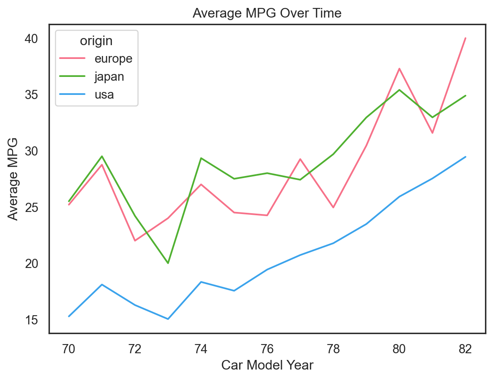
El promedio de millas por galón logrado está aumentando con el tiempo para los tres lugares de origen, pero EE.UU.j siempre es más bajo que Europa y Japón.
Rotar etiquetas x-tick
En este ejercicio, seguiremos ecaminando el conjunto de datos de millas por galón. En el código proporcionado, creamos un gráfico de puntos que muestra la aceleración media de los coches en cada uno de los tres lugares de origen. Observa que la variable "acceleration" es el tiempo de aceleración de 0 a 60 millas por hora, en segundos. Los valores más altos indican una aceleración más lenta.
Utilicemos este gráfico para practicar la rotación de las etiquetas x-tick. Recuerda que la función para rotar las etiquetas x-tick es una función independiente de Matplotlib y no una función aplicada al propio objeto gráfico.
Instrucciones
- Gira 90 grados las etiquetas x-tick.
# Create point plot
sns.catplot(x='origin', y='acceleration',
data=mpg, kind='point',
linestyle='none', capsize=0.1) # join=False deprecated
# Rotate x-tick labels
plt.xticks(rotation=90)
# Show plot
plt.show()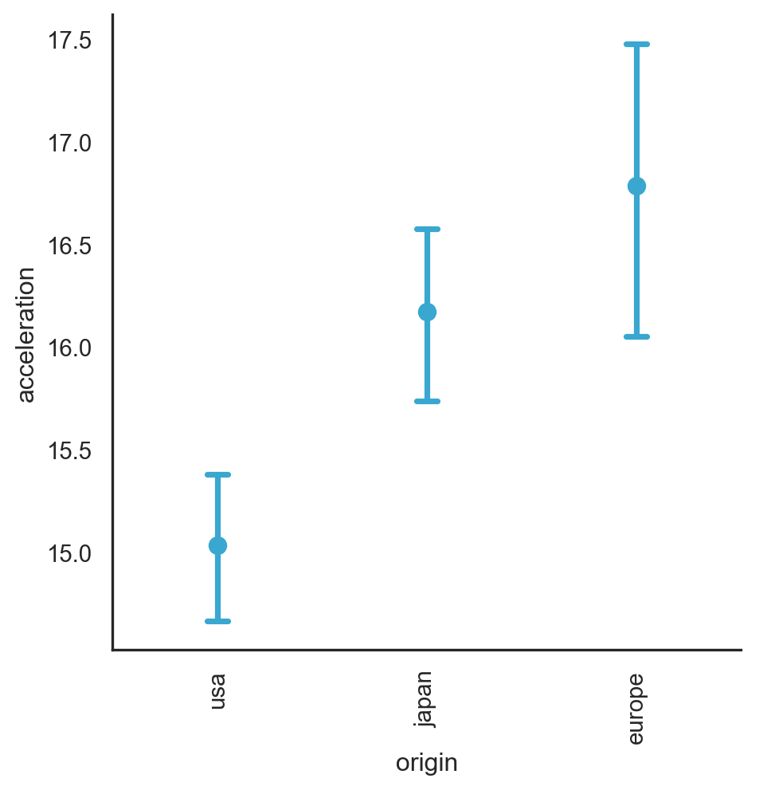
Dado que los valores más altos indican una aceleración más lenta, parece que los coches de Japón y Europa tienen una aceleración significativamente más lenta en comparación con los de EE.UU.
Unirlo Todo
- Inicio Para importar Seaborn:
import seaborn as snsPara importar Matplotlib:
import matplotlib.pyplot as pltPara mostrar un gráfico:
plt.show()- Gráficos Relacionales
- Muestran la relación entre dos variables cuantitativas.
- Ejemplos: scatter plots, line plots
sns.relplot(x='x_variable_name',
y='y_variable_name',
data=pandas_df,
kind='scatter')- Gráficos Categóricos
- Describen la distribución de una variable cuantitativa dentro de categorías definida por una variable categórica
- Ejemplos: bar plots, count plots, box plots, pint plots
sns.catplot(x='x_variable_name',
y='y_variable_name',
data=pandas_df,
kind='bar')Añadiendo una tercer variable (hue)
- Configurar
huecreatra subgrupos que son desplegados como diferentes colores en un solo gráfico

- Configurar
Añadiendo una tercer variable (row/col)
- Configurar
rowy/ocolenrelplot()ocatplot()creará subgrupos que son desplegados en subgráficos separados.

- Configurar
Personalización
Cambiar el fondo:
sns.set_style()Cambiar los colores de los elementos principales:
sns.set_palette()Cambiar la escala:
sns.set_context()Añadir un título
Tipo de Objeto Tipo de gráfico Cómo añadir un título FacetGridrelplot(),catplot()g.fig.suptitle()AxesSubplotscatterplot(),countplot(), etc.g.set_title()
Toques finales
- Añadir etiquetas al eje x y eje y
g.set(xlabel='new x-axis label',
ylabel='new y-axis label')Rotar etiquetas el eje x
plt.xticks(rotation=90)Diagrama de cajas con subgrupos
En este ejercicio, examinaremos el conjunto de datos que contiene las respuestas de una encuesta realizada a jóvenes. Una de las preguntas que se hicieron a los jóvenes fue: “¿Te interesa tener mascotas?” Exploraremos si la distribución de edades de los que responden “si” tiende a ser mayor o menor que la de los que responden “no”, distinguiendo según el género.
survey_data['Interested in Pets'] = survey_data['Pets'].apply(
lambda x: 'Yes' if x >= 4.0 else 'No')Instrucciones
- Configura la paleta de colores en
"Blues". - Añade subgrupos para colorear los gráficos de caja en función de
"Interested in Pets". - Establece el título del objeto
FacetGridgen `“Age of Those Interested in Pets vs. Not”. - Realiza la visualización del gráfico utlizando una función Matplotlib.
# Set palette to "Blues"
sns.set_palette('Blues')
# Adjust to add subgroups based on "Interested in Pets"
g = sns.catplot(x='Gender', y='Age',
data=survey_data,
kind='box', hue='Interested in Pets')
# Set title to "Age of Those Interested in Pets vs. Not"
g.fig.suptitle('Age of Those Interested in Pets vs. Not')
# Show plot
plt.show()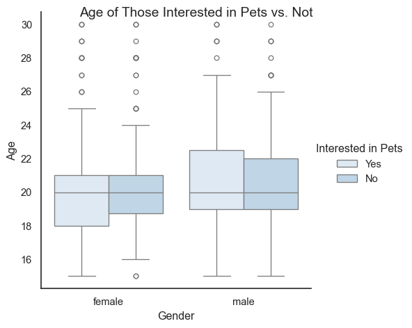
Después de controlar por género, parece que las distribuciones de edad de las personas están interesadsas en las mascotas son similares a las de las que no lo están
Diagrama de barras con subgrupos y subtramas
En este ejercicio, volveremos a nuestro conjunto de datos de la encuesta a jóvenes e investigaremos si la proporción de personas a las que les gusta la música tecno ("Likes Techno") varía según su género. ("Gender") o su lugar de residencia ("Village - town"). ¡Este ejercicio nos dará la oportunidad de practicar las muchas cosas que hemos aprendido a lo largo de este curso!
Antes hay que transformar la columna ‘Techno’ por ‘Likes Techno’
survey_data['Likes Techno'] = survey_data['Techno'].apply(lambda x: True if x >= 4.0 else False)Instrucciones
- Establece el estilo de la figura en
"dark". - Ajusta el código del diagrama de barras para añadir subtramas basadas en
"Gender", dispuestas en columnas. - Añade el título
"Percentage of Young People Who Like Techno"a esta tramaFacetGrid. - Etiqueta el eje x
"Location of Residence"y el eje y"% Who Like Techno"
plt.style.use('seaborn-v0_8')
# Set the figure style to "dark"
sns.set_style('dark')
# Adjust to add subplots per gender
g = sns.catplot(x='Village - town', y='Likes Techno',
data=survey_data, kind='bar',
col='Gender')
# Add title and axix labels
g.fig.suptitle('Percentage of Young People Who Like Techno',
y=1.02)
g.set(xlabel='Location of Residence',
ylabel='% Who Like Techno')
# Show plot
plt.show()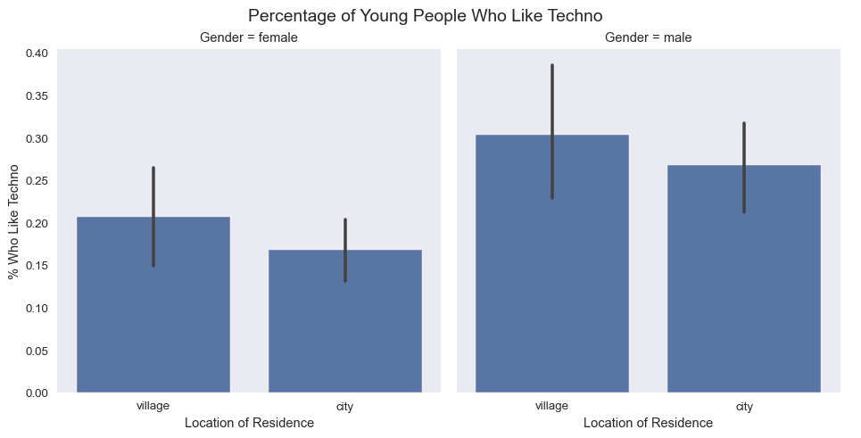
¡Bien hecho! ¿Y ahora qué?
- Explorar y comunicar los resultados

Seguientes pasos:
Visualizaciones avanzadas con Seaborn
Matplotlib avanzado personalizado